Capitulo 5 Criando Gráficos com o R
Este capitulo foi baseado nos livros
AQUINO, J. A. R para cientistas sociais. - Ilhéus, BA: EDITUS, 2014. 157.
ANJOS, A. Análise gráfica com uso do R. Apostila. Dep. de Estatistica da UFPR, 2016. 127p.
Sites
http://curso-r.github.io/index.html PET Estatística UFPR (2016). labestData: Biblioteca de Dados para Aprendizado de Estatística. R package version x.y-z.w.
Modificações foram realizadas utilizando outros materiais que se encontram referenciado no final do Capitulo.
O R é uma poderosa ferramenta no que diz respeito à confeção de gráficos. Iremos abordar três categorias de comandos gráficos, com o uso do pacote báscico do R o graphics". Alguns pacotes foram desenvolvidos especialmente para manipulação de gráficos, como lattice, ggplot2, ggobi* e rgl.
O R possui diferentes funções geradoras de gráficos, e essas são classificados como:
Funções gráficas de alto nível: criam novos gráficos na janela, definindo eixos, título, etc. Exemplos: plot, hist, image, contour, persp etc.
Funções gráficas de baixo nível: permitem adicionar novas informações em gráficos já criados, como novos dados, linhas etc. Exemplos: points, lines, abline, polygon, legend etc.
Funções gráficas iterativas: permitem retirar ou adicionar informações aos gráficos já existentes, usando por exemplo o cursor do mouse. Exemplos: locator e identify.
5.1 Exemplos de gráficos com o R
Você pode ver alguns exemplos de gráficos que podem ser criados no R com os seguintes comandos:
##
##
## demo(image)
## ---- ~~~~~
##
## > # Copyright (C) 1997-2009 The R Core Team
## >
## > require(datasets)
##
## > require(grDevices); require(graphics)
##
## > x <- 10*(1:nrow(volcano)); x.at <- seq(100, 800, by=100)
##
## > y <- 10*(1:ncol(volcano)); y.at <- seq(100, 600, by=100)
##
## > # Using Terrain Colors
## >
## > image(x, y, volcano, col=terrain.colors(100),axes=FALSE)
##
## > contour(x, y, volcano, levels=seq(90, 200, by=5), add=TRUE, col="brown")
##
## > axis(1, at=x.at)
##
## > axis(2, at=y.at)
##
## > box()
##
## > title(main="Maunga Whau Volcano", sub = "col=terrain.colors(100)", font.main=4)
##
## > # Using Heat Colors
## >
## > image(x, y, volcano, col=heat.colors(100), axes=FALSE)
##
## > contour(x, y, volcano, levels=seq(90, 200, by=5), add=TRUE, col="brown")
##
## > axis(1, at=x.at)
##
## > axis(2, at=y.at)
##
## > box()
##
## > title(main="Maunga Whau Volcano", sub = "col=heat.colors(100)", font.main=4)
##
## > # Using Gray Scale
## >
## > image(x, y, volcano, col=gray(100:200/200), axes=FALSE)
##
## > contour(x, y, volcano, levels=seq(90, 200, by=5), add=TRUE, col="black")
##
## > axis(1, at=x.at)
##
## > axis(2, at=y.at)
##
## > box()
##
## > title(main="Maunga Whau Volcano \n col=gray(100:200/200)", font.main=4)
##
## > ## Filled Contours are even nicer sometimes :
## > example(filled.contour)
##
## flld.c> require("grDevices") # for colours
##
## flld.c> filled.contour(volcano, asp = 1) # simple
##
## flld.c> x <- 10*1:nrow(volcano)
##
## flld.c> y <- 10*1:ncol(volcano)
##
## flld.c> filled.contour(x, y, volcano, color = function(n) hcl.colors(n, "terrain"),
## flld.c+ plot.title = title(main = "The Topography of Maunga Whau",
## flld.c+ xlab = "Meters North", ylab = "Meters West"),
## flld.c+ plot.axes = { axis(1, seq(100, 800, by = 100))
## flld.c+ axis(2, seq(100, 600, by = 100)) },
## flld.c+ key.title = title(main = "Height\n(meters)"),
## flld.c+ key.axes = axis(4, seq(90, 190, by = 10))) # maybe also asp = 1
##
## flld.c> mtext(paste("filled.contour(.) from", R.version.string),
## flld.c+ side = 1, line = 4, adj = 1, cex = .66)
##
## flld.c> # Annotating a filled contour plot
## flld.c> a <- expand.grid(1:20, 1:20)
##
## flld.c> b <- matrix(a[,1] + a[,2], 20)
##
## flld.c> filled.contour(x = 1:20, y = 1:20, z = b,
## flld.c+ plot.axes = { axis(1); axis(2); points(10, 10) })
##
## flld.c> ## Persian Rug Art:
## flld.c> x <- y <- seq(-4*pi, 4*pi, len = 27)
##
## flld.c> r <- sqrt(outer(x^2, y^2, "+"))
##
## flld.c> filled.contour(cos(r^2)*exp(-r/(2*pi)), axes = FALSE)
##
## flld.c> ## rather, the key *should* be labeled:
## flld.c> filled.contour(cos(r^2)*exp(-r/(2*pi)), frame.plot = FALSE,
## flld.c+ plot.axes = {})
##
##
## demo(persp)
## ---- ~~~~~
##
## > ### Demos for persp() plots -- things not in example(persp)
## > ### -------------------------
## >
## > require(datasets)
##
## > require(grDevices); require(graphics)
##
## > ## (1) The Obligatory Mathematical surface.
## > ## Rotated sinc function.
## >
## > x <- seq(-10, 10, length.out = 50)
##
## > y <- x
##
## > rotsinc <- function(x,y)
## + {
## + sinc <- function(x) { y <- sin(x)/x ; y[is.na(y)] <- 1; y }
## + 10 * sinc( sqrt(x^2+y^2) )
## + }
##
## > sinc.exp <- expression(z == Sinc(sqrt(x^2 + y^2)))
##
## > z <- outer(x, y, rotsinc)
##
## > oldpar <- par(bg = "white")
##
## > persp(x, y, z, theta = 30, phi = 30, expand = 0.5, col = "lightblue")
##
## > title(sub=".")## work around persp+plotmath bug
##
## > title(main = sinc.exp)
##
## > persp(x, y, z, theta = 30, phi = 30, expand = 0.5, col = "lightblue",
## + ltheta = 120, shade = 0.75, ticktype = "detailed",
## + xlab = "X", ylab = "Y", zlab = "Z")
##
## > title(sub=".")## work around persp+plotmath bug
##
## > title(main = sinc.exp)
##
## > ## (2) Visualizing a simple DEM model
## >
## > z <- 2 * volcano # Exaggerate the relief
##
## > x <- 10 * (1:nrow(z)) # 10 meter spacing (S to N)
##
## > y <- 10 * (1:ncol(z)) # 10 meter spacing (E to W)
##
## > persp(x, y, z, theta = 120, phi = 15, scale = FALSE, axes = FALSE)
##
## > ## (3) Now something more complex
## > ## We border the surface, to make it more "slice like"
## > ## and color the top and sides of the surface differently.
## >
## > z0 <- min(z) - 20
##
## > z <- rbind(z0, cbind(z0, z, z0), z0)
##
## > x <- c(min(x) - 1e-10, x, max(x) + 1e-10)
##
## > y <- c(min(y) - 1e-10, y, max(y) + 1e-10)
##
## > fill <- matrix("green3", nrow = nrow(z)-1, ncol = ncol(z)-1)
##
## > fill[ , i2 <- c(1,ncol(fill))] <- "gray"
##
## > fill[i1 <- c(1,nrow(fill)) , ] <- "gray"
##
## > par(bg = "lightblue")
##
## > persp(x, y, z, theta = 120, phi = 15, col = fill, scale = FALSE, axes = FALSE)
##
## > title(main = "Maunga Whau\nOne of 50 Volcanoes in the Auckland Region.",
## + font.main = 4)
##
## > par(bg = "slategray")
##
## > persp(x, y, z, theta = 135, phi = 30, col = fill, scale = FALSE,
## + ltheta = -120, lphi = 15, shade = 0.65, axes = FALSE)
##
## > ## Don't draw the grid lines : border = NA
## > persp(x, y, z, theta = 135, phi = 30, col = "green3", scale = FALSE,
## + ltheta = -120, shade = 0.75, border = NA, box = FALSE)
##
## > ## `color gradient in the soil' :
## > fcol <- fill ; fcol[] <- terrain.colors(nrow(fcol))
##
## > persp(x, y, z, theta = 135, phi = 30, col = fcol, scale = FALSE,
## + ltheta = -120, shade = 0.3, border = NA, box = FALSE)
##
## > ## `image like' colors on top :
## > fcol <- fill
##
## > zi <- volcano[ -1,-1] + volcano[ -1,-61] +
## + volcano[-87,-1] + volcano[-87,-61] ## / 4
##
## > fcol[-i1,-i2] <-
## + terrain.colors(20)[cut(zi,
## + stats::quantile(zi, seq(0,1, length.out = 21)),
## + include.lowest = TRUE)]
##
## > persp(x, y, 2*z, theta = 110, phi = 40, col = fcol, scale = FALSE,
## + ltheta = -120, shade = 0.4, border = NA, box = FALSE)
##
## > ## reset par():
## > par(oldpar)##
##
## demo(graphics)
## ---- ~~~~~~~~
##
## > # Copyright (C) 1997-2009 The R Core Team
## >
## > require(datasets)
##
## > require(grDevices); require(graphics)
##
## > ## Here is some code which illustrates some of the differences between
## > ## R and S graphics capabilities. Note that colors are generally specified
## > ## by a character string name (taken from the X11 rgb.txt file) and that line
## > ## textures are given similarly. The parameter "bg" sets the background
## > ## parameter for the plot and there is also an "fg" parameter which sets
## > ## the foreground color.
## >
## >
## > x <- stats::rnorm(50)
##
## > opar <- par(bg = "white")
##
## > plot(x, ann = FALSE, type = "n")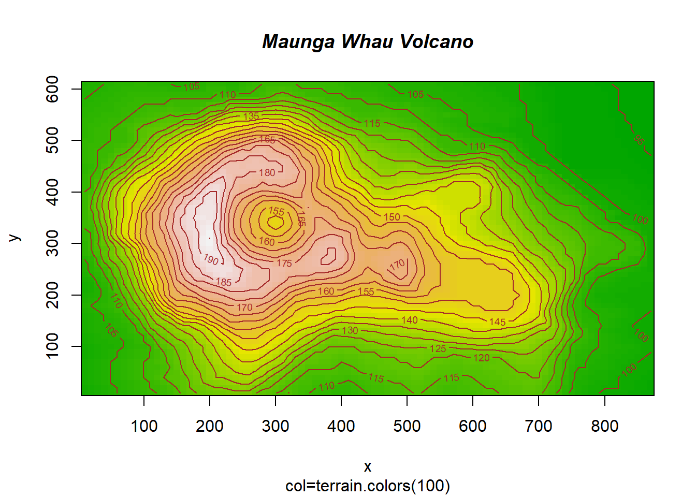
##
## > abline(h = 0, col = gray(.90))
##
## > lines(x, col = "green4", lty = "dotted")
##
## > points(x, bg = "limegreen", pch = 21)
##
## > title(main = "Simple Use of Color In a Plot",
## + xlab = "Just a Whisper of a Label",
## + col.main = "blue", col.lab = gray(.8),
## + cex.main = 1.2, cex.lab = 1.0, font.main = 4, font.lab = 3)
##
## > ## A little color wheel. This code just plots equally spaced hues in
## > ## a pie chart. If you have a cheap SVGA monitor (like me) you will
## > ## probably find that numerically equispaced does not mean visually
## > ## equispaced. On my display at home, these colors tend to cluster at
## > ## the RGB primaries. On the other hand on the SGI Indy at work the
## > ## effect is near perfect.
## >
## > par(bg = "gray")
##
## > pie(rep(1,24), col = rainbow(24), radius = 0.9)##
## > title(main = "A Sample Color Wheel", cex.main = 1.4, font.main = 3)
##
## > title(xlab = "(Use this as a test of monitor linearity)",
## + cex.lab = 0.8, font.lab = 3)
##
## > ## We have already confessed to having these. This is just showing off X11
## > ## color names (and the example (from the postscript manual) is pretty "cute".
## >
## > pie.sales <- c(0.12, 0.3, 0.26, 0.16, 0.04, 0.12)
##
## > names(pie.sales) <- c("Blueberry", "Cherry",
## + "Apple", "Boston Cream", "Other", "Vanilla Cream")
##
## > pie(pie.sales,
## + col = c("purple","violetred1","green3","cornsilk","cyan","white"))##
## > title(main = "January Pie Sales", cex.main = 1.8, font.main = 1)
##
## > title(xlab = "(Don't try this at home kids)", cex.lab = 0.8, font.lab = 3)
##
## > ## Boxplots: I couldn't resist the capability for filling the "box".
## > ## The use of color seems like a useful addition, it focuses attention
## > ## on the central bulk of the data.
## >
## > par(bg="cornsilk")
##
## > n <- 10
##
## > g <- gl(n, 100, n*100)
##
## > x <- rnorm(n*100) + sqrt(as.numeric(g))
##
## > boxplot(split(x,g), col="lavender", notch=TRUE)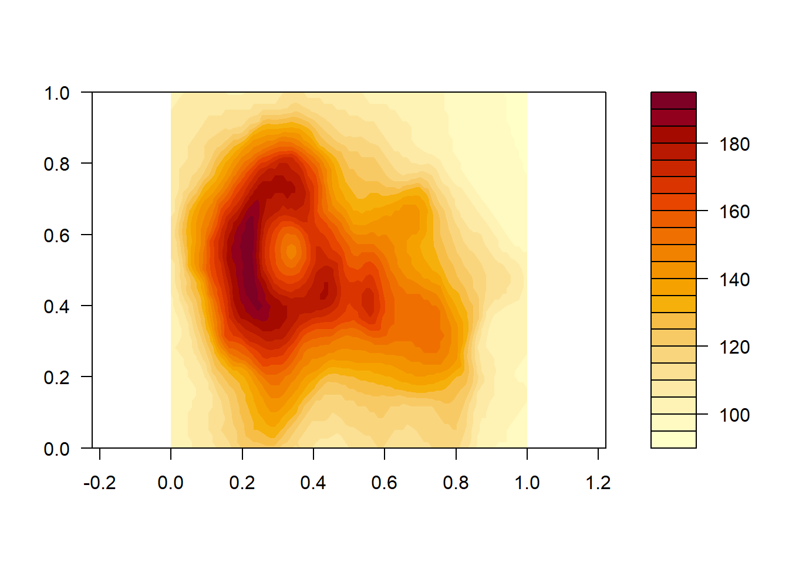
##
## > title(main="Notched Boxplots", xlab="Group", font.main=4, font.lab=1)
##
## > ## An example showing how to fill between curves.
## >
## > par(bg="white")
##
## > n <- 100
##
## > x <- c(0,cumsum(rnorm(n)))
##
## > y <- c(0,cumsum(rnorm(n)))
##
## > xx <- c(0:n, n:0)
##
## > yy <- c(x, rev(y))
##
## > plot(xx, yy, type="n", xlab="Time", ylab="Distance")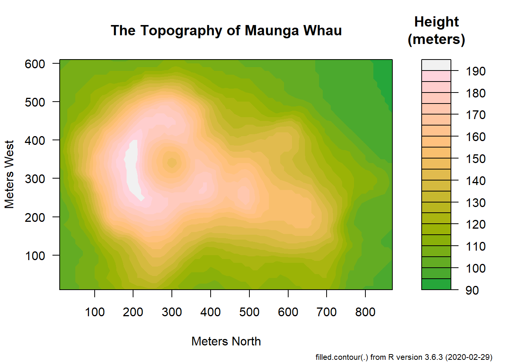
##
## > polygon(xx, yy, col="gray")
##
## > title("Distance Between Brownian Motions")
##
## > ## Colored plot margins, axis labels and titles. You do need to be
## > ## careful with these kinds of effects. It's easy to go completely
## > ## over the top and you can end up with your lunch all over the keyboard.
## > ## On the other hand, my market research clients love it.
## >
## > x <- c(0.00, 0.40, 0.86, 0.85, 0.69, 0.48, 0.54, 1.09, 1.11, 1.73, 2.05, 2.02)
##
## > par(bg="lightgray")
##
## > plot(x, type="n", axes=FALSE, ann=FALSE)##
## > usr <- par("usr")
##
## > rect(usr[1], usr[3], usr[2], usr[4], col="cornsilk", border="black")
##
## > lines(x, col="blue")
##
## > points(x, pch=21, bg="lightcyan", cex=1.25)
##
## > axis(2, col.axis="blue", las=1)
##
## > axis(1, at=1:12, lab=month.abb, col.axis="blue")
##
## > box()
##
## > title(main= "The Level of Interest in R", font.main=4, col.main="red")
##
## > title(xlab= "1996", col.lab="red")
##
## > ## A filled histogram, showing how to change the font used for the
## > ## main title without changing the other annotation.
## >
## > par(bg="cornsilk")
##
## > x <- rnorm(1000)
##
## > hist(x, xlim=range(-4, 4, x), col="lavender", main="")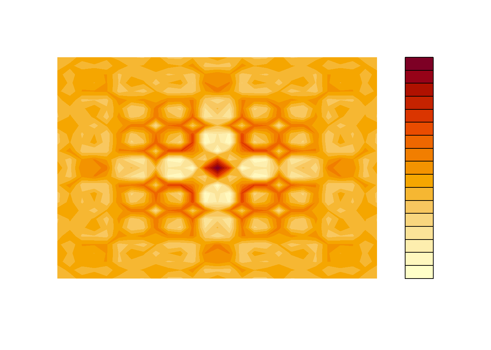
##
## > title(main="1000 Normal Random Variates", font.main=3)
##
## > ## A scatterplot matrix
## > ## The good old Iris data (yet again)
## >
## > pairs(iris[1:4], main="Edgar Anderson's Iris Data", font.main=4, pch=19)##
## > pairs(iris[1:4], main="Edgar Anderson's Iris Data", pch=21,
## + bg = c("red", "green3", "blue")[unclass(iris$Species)])
##
## > ## Contour plotting
## > ## This produces a topographic map of one of Auckland's many volcanic "peaks".
## >
## > x <- 10*1:nrow(volcano)
##
## > y <- 10*1:ncol(volcano)
##
## > lev <- pretty(range(volcano), 10)
##
## > par(bg = "lightcyan")
##
## > pin <- par("pin")
##
## > xdelta <- diff(range(x))
##
## > ydelta <- diff(range(y))
##
## > xscale <- pin[1]/xdelta
##
## > yscale <- pin[2]/ydelta
##
## > scale <- min(xscale, yscale)
##
## > xadd <- 0.5*(pin[1]/scale - xdelta)
##
## > yadd <- 0.5*(pin[2]/scale - ydelta)
##
## > plot(numeric(0), numeric(0),
## + xlim = range(x)+c(-1,1)*xadd, ylim = range(y)+c(-1,1)*yadd,
## + type = "n", ann = FALSE)
##
## > usr <- par("usr")
##
## > rect(usr[1], usr[3], usr[2], usr[4], col="green3")
##
## > contour(x, y, volcano, levels = lev, col="yellow", lty="solid", add=TRUE)
##
## > box()
##
## > title("A Topographic Map of Maunga Whau", font= 4)
##
## > title(xlab = "Meters North", ylab = "Meters West", font= 3)
##
## > mtext("10 Meter Contour Spacing", side=3, line=0.35, outer=FALSE,
## + at = mean(par("usr")[1:2]), cex=0.7, font=3)
##
## > ## Conditioning plots
## >
## > par(bg="cornsilk")
##
## > coplot(lat ~ long | depth, data = quakes, pch = 21, bg = "green3")
##
## > par(opar)5.2 Entrada de dados
Nesse tópico utlizaremos o arquivo de dados dadosfisio.csv.
Dados fisico hidrico de 3 solos com textutas diferentes.
| Cod. | Solo | Areia | Silte | Argila |
|---|---|---|---|---|
| Z1 | NITOSSOLO | 122 | 121 | 757 |
| Z2 | LATOSSOLO | 710 | 80 | 210 |
| Z3 | LATOSSOLO | 892 | 10 | 98 |
Ler dados via web.
Verificar a estrutura de dados.
## 'data.frame': 108 obs. of 16 variables:
## $ z : int 1 1 1 1 1 1 1 1 1 1 ...
## $ x : int 1 1 1 1 1 1 3 3 3 3 ...
## $ y : int 1 3 5 7 9 11 1 3 5 7 ...
## $ cota : num 9.15 8.95 8.78 8.59 8.48 8.41 8.93 8.76 8.58 8.48 ...
## $ ds : num 1.5 1.47 1.47 1.39 1.38 ...
## $ cc : num 0.398 0.382 0.351 0.372 0.356 ...
## $ ma : num 0.129 0.153 0.185 0.188 0.208 ...
## $ ptotal: num 0.526 0.535 0.537 0.561 0.564 ...
## $ tibo : num 46.1 19.2 172.8 96 30.7 ...
## $ tibe : num 26.8 26.1 113.9 74.8 37.2 ...
## $ a : num 926 384 275 1207 151 ...
## $ b : num -0.529 -0.418 -0.131 -0.376 -0.227 ...
## $ X3 : num 518 243 238 798 118 ...
## $ X60 : num 153.2 92.7 176.5 335.4 69.9 ...
## $ X90 : num 106.2 69.4 161.2 258.4 59.8 ...
## $ X120 : num 73.6 52 147.2 199 51.1 ...Resumo estatástico da coluna 5 a coluna 8 de todos os solos
## ds cc ma ptotal
## Min. :1.263 Min. :0.1501 Min. :0.004834 Min. :0.2257
## 1st Qu.:1.500 1st Qu.:0.2505 1st Qu.:0.047689 1st Qu.:0.3090
## Median :1.722 Median :0.2712 Median :0.081510 Median :0.3284
## Mean :1.660 Mean :0.2998 Mean :0.090675 Mean :0.3905
## 3rd Qu.:1.787 3rd Qu.:0.3579 3rd Qu.:0.129955 3rd Qu.:0.5269
## Max. :1.960 Max. :0.4997 Max. :0.238551 Max. :0.6015Neste exemplo vamos analisar cada solo separadamente usando o comando subset()
5.3 Usando a função plot()
A função plot() inicia um novo gráfico. Em sua forma mais simples a função
recebe valores de coordenadas ds (densidade do solo) e ptotal (porosidade total do solo) do solo z1.

Vamos no gráfico inserir linhas ligando os pontos. Use o argumento *type=“l” na função plot()

Verifique outras opcões para os gráfico
- type = “p” especifica o tipo de plotagem
- “p”: pontos,
- “l”: linhas,
- “b”: pontos conectados por linhas,
- “o”: id. mas as linhas estão acima dos pontos,
- “h”: linhas verticais,
- “s”: passos, os dados são representados pelo topo das linhas verticais,
- “S”: id. mas os dados são representados pela parte inferior das linhas verticais
x <- 0:12
y <- sin(pi/5 * x)
op <- par(mfrow = c(3,3), mar = .1+ c(2,2,3,1))
for (tp in c("p","l","b", "c","o","h", "s","S","n")) {
plot(y ~ x, type = tp, main = paste0("plot(*, type = \"", tp, "\")"))
if(tp == "S") {
lines(x, y, type = "s", col = "red", lty = 2)
mtext("lines(*, type = \"s\", ...)", col = "red", cex = 0.8)
}
}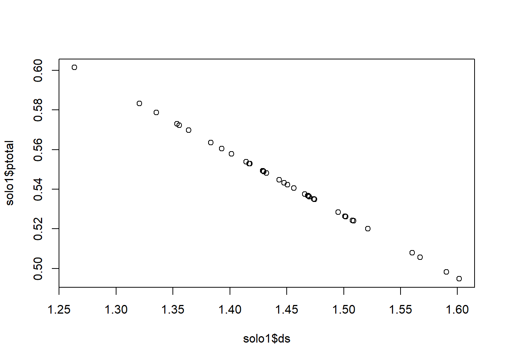
5.3.1 Mudando o padrão dos pontos pch=
Pode-se usar diferentes padrões para os pontos usando o argumento pch=.Diferentes tipos de símbolos são associados a diferentes números. Pode-se ainda usar caracteres como o simbolo desejado.
Use a opção pch = para especificar simbolos a serem usados ao traçar pontos. Para os simbolos de 21 a 25, especifique a cor da borda (col =).


Neste exemplo acima note, que foi adicionado o argumento ylim e xlim eles limitam os valores minimos e maximos:
Veja um exemplo do padrão dos pontos.
5.3.2 Mudando as linhas (lwd e lty)
Você pode alterar linhas usando as seguintes opções. Isso é particularmente útil para linhas de referência, eixos e linhas de ajuste. A largura das linhas pode ser mudada com o argumento lwd=, enquanto os estilos das linhas podem ser modificados com o argumento lty=.


5.3.3 Adicionando linhas a um grafico de pontos
A função utilizada para inserir linhas é abline().
Vamos usar a função abline para inserir uma linha que mostra a média dos dados do eixo Y.
o h é de linha horizontal. Fará uma linha na horizontal que passa pela média de y.
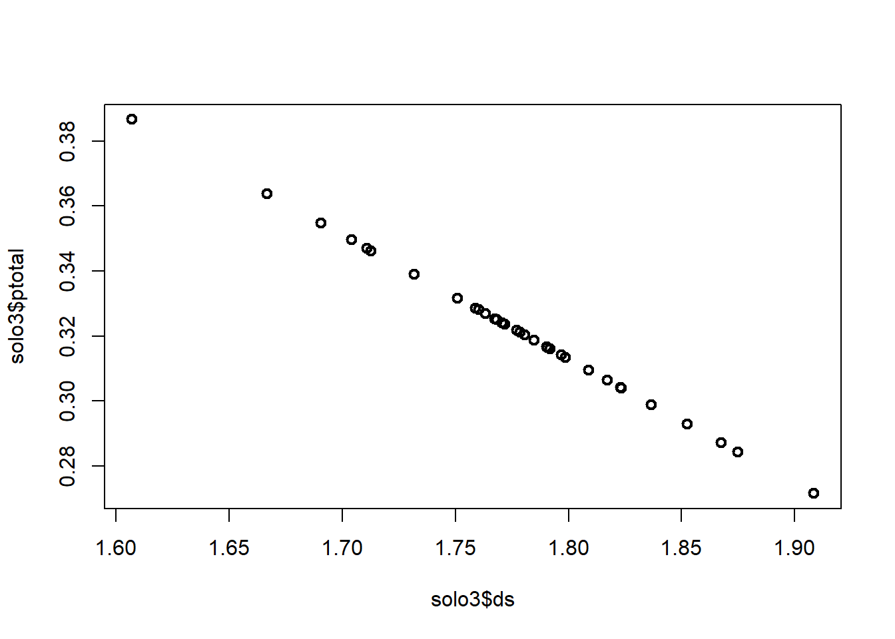
Para passar uma linha que passa pela média de x
Também é possível inserir as duas linhas ao mesmo tempo.
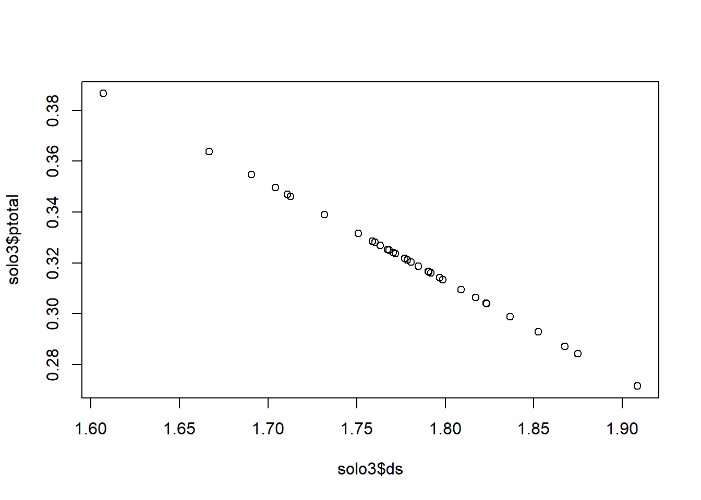
Com cores diferentes
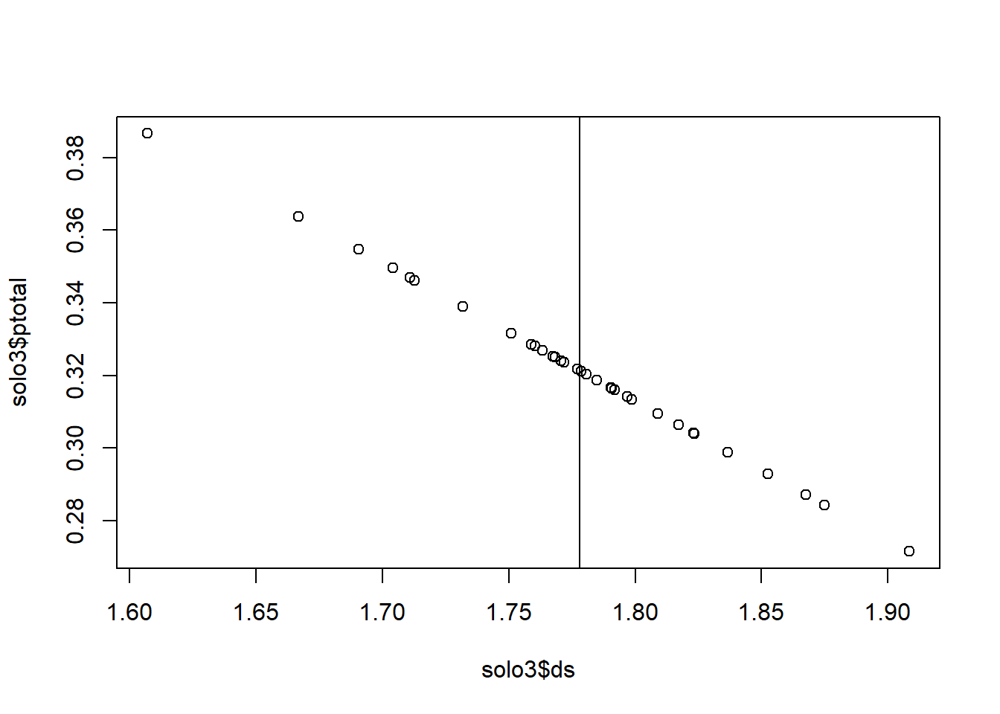
5.3.4 Definindo o intervalo dos eixos
Se você quiser preencher um mesmo gráfico com linhas e pontos que possuem diferentes amplitudes como nosso exemplo do solos, deve usar o argumento type=n. Com este argumento um gráfico em branco é criado.
5.3.5 Personalizando os gráficos
Alguns parâmetros podem ser usados no intuito de personalizar um gráfico no R.
Exemplo:
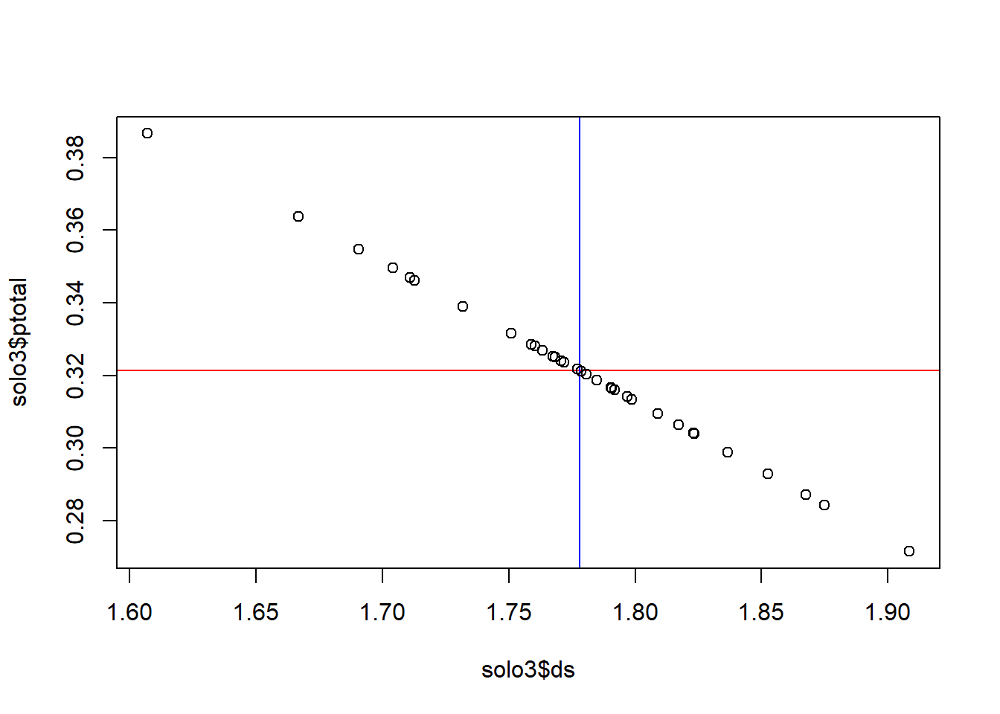
plot(solo1$ptotal,solo1$ds, #plota ds e ptotal
xlab="Macroporosdiade (%)", #nomeia o eixo x
ylab=expression(Ds~(mg~Kg^{-1})), #nomeia o eixo y
main="Como personalizar um gráfico", #referente ao título
xlim=c(0.48,0.64), #limites do eixo x
ylim=c(0,2), col="red", #limites do eixo y
pch=22, #padrão dos pontos
bg="yellow", #cor de preenchimento
tcl=0.4, #tamanho dos traços dos eixos
las=1, #orientação do texto em y
cex=1.5, #tamanho do objeto do ponto
bty="l", #altera as bordas
abline(lm(solo1$ds~solo1$ptotal))) #regressao dos pontos
Veja o demo(plotmath) para saber mais sobre anotações em gráficos.
5.4 Histogramas
A função hist() produz um histograma dos dados informados em seu argumento enquanto a função barplot() produz um gráfico de barras.
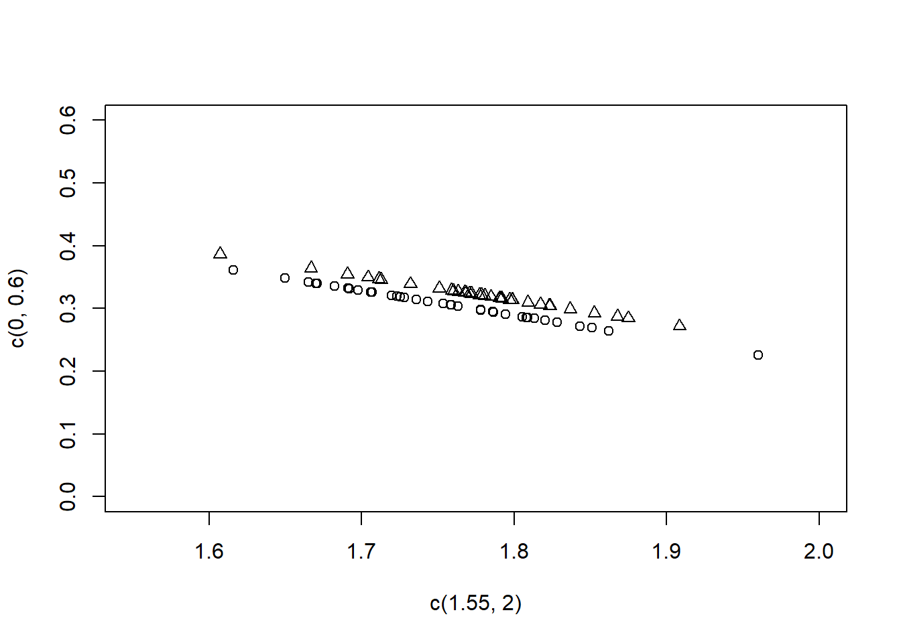
5.4.1 Personalizando gráficos
Os histogramas criados no R seguem um certo padrão (conhecido como parâmetros default) que podem ser alterados de acordo com a preferência do usuário. Você pode obter informações detalhadas desses parâmetros se usar os recursos de ajuda do R.
hist(solo1$ds, #histograma de ds
main="Histograma Personalizado\ndensidade do solo",#título
xlab=expression(Ds~(mg~Kg^{-1})), #texto do eixo das abscissas
ylab="Probabilidades", #texto do eixo das ordenadas
xlim=c(1,2), #limites do eixo de x
ylim=c(0,10), #limites do eixo y
col="lightblue", #cor das colunas
border="white", #cor das bordas das colunas
adj=0, #alinhamento dos textos 0, 0.5 e 1
col.axis="red") #cor do texto nos eixos5.5 Gráficos de Barras
Assemelha-se ao histograma, Porém, nesse caso, os dados referem-se a categoria ou aos tratamentos
5.6 Boxplots
Dados de um experimento visando controle de pulgão (Aphis gossypii Glover) em cultura de pepino, instalado em delineamento inteiramente casualizado com 6 repetições. A resposta observada foi o número de pulgões após a aplicação de produtos indicados para seu controle.
dados <- read.table("https://www.dropbox.com/s/jjyo8dhyy0qt3ft/BanzattoQd3.2.1.txt?dl=1")
str(dados)## 'data.frame': 30 obs. of 3 variables:
## $ trat : Factor w/ 5 levels "Azinfos etilico",..: 5 1 3 4 2 5 1 3 4 2 ...
## $ rept : int 1 1 1 1 1 2 2 2 2 2 ...
## $ pulgoes: int 2370 1282 562 173 193 1687 1527 321 127 71 ...trat Fator de níveis nominais. Tratamento aplicado para controle do pulgão.
rept Número inteiro que identifica as repetições de cada tratamento.
pulgões Número de pulgões coletados 36 horas após a pulverização dos tratamentos.
Boxplots podem ser criados para variáveis individuais ou para variáveis por grupo. O formato é boxplot ( x , data =) , em que x é uma fórmula e data = denota o quadro de dados que fornece os dados.
Um exemplo de uma fórmula é y ~ group onde um boxplot separado para a variável numérica é gerado para cada valor de group.
x11()
boxplot(pulgoes~trat, #formula do boxplot
data = dados, #conjunto de dados
main="boxplot", #título
xlab="Controle do pulgão", #texto do eixo x
ylab="Numero de plugões", #texto do eixo y
col=3) #cor verde Adicione horizontal = TRUE para inverter a orientação do eixo.
boxplot(pulgoes~trat, #formula do boxplot
data = dados, #conjunto de dados
main="boxplot", #t?tulo
xlab="Controle do pulgão", #texto do eixo x
ylab="Numero de plugões", #texto do eixo y
col=3, horizontal = T, #cor verde
notch=T) #teste para mediana## Warning in bxp(list(stats = structure(c(825, 871, 972.5, 1282, 1527, 44, :
## some notches went outside hinges ('box'): maybe set notch=FALSE
5.6.1 Boxplot com fatorial
Boxplot com 2 fatores, com caixas coloridas para facilitar a interpretação.
Efeito de Recipientes para duas Espécies de Eucalipto
Experimento em esquema fatorial 3x2 para estudar o efeito de 3 tipos de recipientes para a produção de mudas de duas espécies de Eucalipto. O experimento foi instalado em delineamento inteiramente casualizado.
recipie São os níveis de recipiente estudados: - SPP - saco plástico pequeno; - SPG - saco plástico grande; e - Lam - laminado.
especie São as espécies de Eucalipto: Eucalyptus citriodora e Eucalyptus grandis
rept Identifica as repetições de cada combinação dos fatores recipiente e espécie.
alt Altura das mudas aos 80 dias de idade (cm).
Baixar dados via web.
## 'data.frame': 24 obs. of 4 variables:
## $ recipie: Factor w/ 3 levels "Lam","SPG","SPP": 3 3 2 2 1 1 3 3 2 2 ...
## $ especie: Factor w/ 2 levels "E. citriodora",..: 1 2 1 2 1 2 1 2 1 2 ...
## $ rept : int 1 1 1 1 1 1 2 2 2 2 ...
## $ alt : num 26.2 24.8 25.7 19.6 22.8 19.8 26 24.6 26.3 21.1 ...Gerar o gráfico boxpolt com o comando abaixo.
boxplot(fat$alt~fat$recipie*especie, data=fat, notch=F,
col=(c("gold","darkgreen","brown")),
main="Fatorial", xlab="Recipiente e Espécies",
ylab="Altura de plantas (cm)")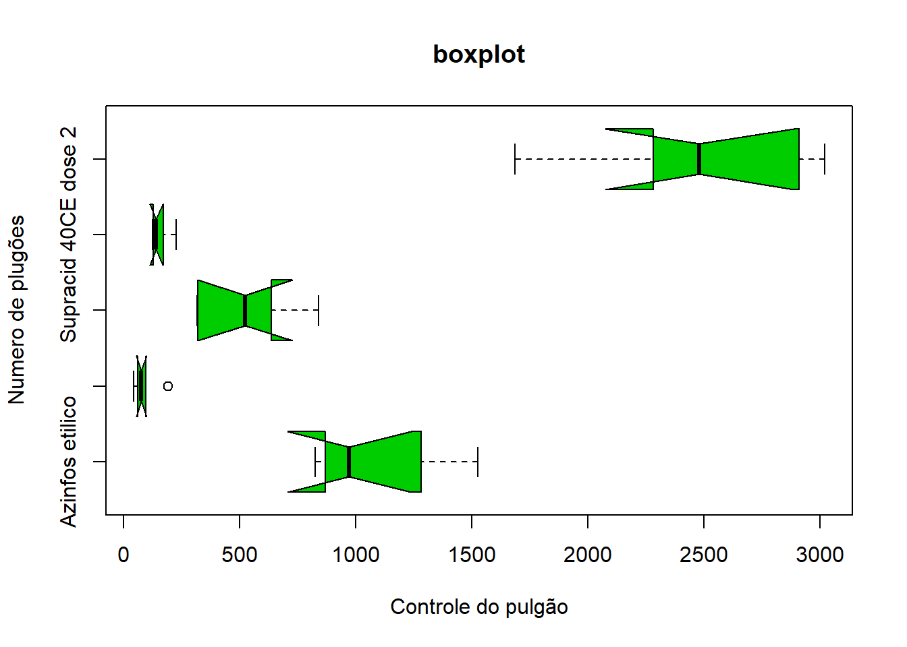
5.7 Cores
Gráficos em preto e branco são bons na maioria dos casos, mas cores podem ser mudadas usando col="red" (escrevendo o nome da cor) ou col=2 (usando números).
O comando abaixo mostra os números que especificam algumas cores.

Veja sua tabela de cores executando o script paletedecores.R.
Podemos também criar cores personalizadas usando a função do rgb(), que recebe como argumentos as quantidades de vermelho (red), verde (green) e azul (blue) e, opcionalmente, o grau de opacidade (alpha). Os valores devem ser números reais entre 0 e 1.
Exemplos:
5.8 Interagindo com a Janela gráfica
Poderemos com o mouse marcar o ponte desejado usando a função identify ()
## integer(0)5.9 Texto e tamanho do símbolo
As seguintes opções podem ser usadas para controlar o tamanho do texto e do símbolo em gráficos.
cex número que indica o valor pelo qual o texto e os símbolos de plotagem devem ser dimensionados em relação ao padrão.
1 = padrão, 1,5 é 50% maior, 0,5 é 50% menor, etc.
5.10 Visualizar vários gráficos
x11()
boxplot(pulgoes~trat, #formula do boxplot
data = dados, #conjunto de dados
main="boxplot", #título
xlab="Controle do pulgão", #texto do eixo x
ylab="Numero de plugões", #texto do eixo y
col=3, #cor verde
notch=F) #teste para mediana
5.10.1 Varios gráficos na mesma janela gráfica
Você pode dar instruções para o programa mostrar diversos gráficos pequenos em uma mesma janela ao invês de um apenas. Para isto use a função par().
Exemplo 1
par(mfrow = c(2,2)) #2 linhas e 2 colunas
plot(solo1$ptotal,solo1$ds)
boxplot(solo1$ds,solo2$ds, solo3$ds)
hist(solo$ptotal)
plot(solo$ptotal,solo$ds)
Exemplo 2

5.11 Salvando gráficos
Você pode salvar o gráfico em vários formatos no menu Arquivo -> Salvar como.
Você também pode salvar o gráfico via código usando uma das seguintes funções.
pdf (file = "meugráfico.pdf") #ficheiro PDF
win.metafile ("meu grafico.wmf") #metarquivo do windows
png ("meu grafico.png") #arquivo png
jpeg ("meu grafico.jpg") #arquivo jpeg
bmp ("meu grafico.bmp") #arquivo bmp
postscript ("meu grafico.ps") #arquivo postscript